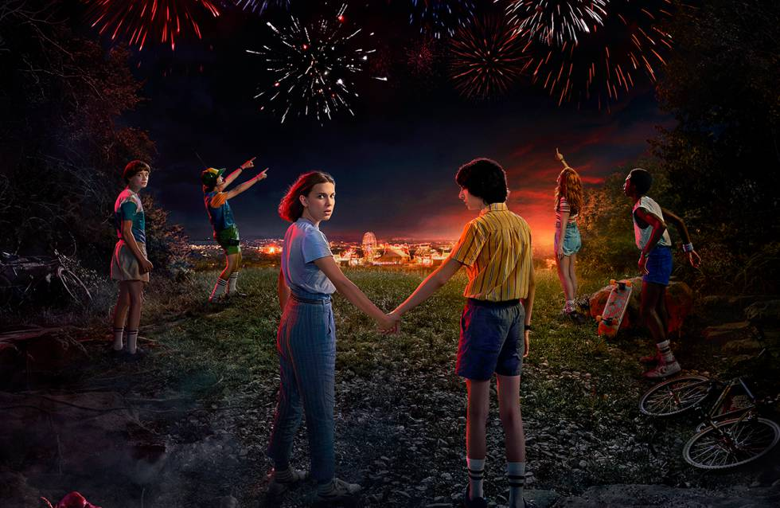

-

02/01/2020
Serie el Señor de los anillos pierde a su protagonista.
La adaptacion del Señor de los anillos de Amazon Prime Video , debe
ser de las series mas esperadas. La serie cuenta con el Catalan J.A Bayona com o director ,
todavia no habia presentado de forma oficial los actores que encabezarian el reparto. Esto
no habria evitado que se filtrasen los nombres de los principales fichajes : Markella
Kavenagh , Maxim Baldry y Ema Horvath , ademas de Poulter , en un buen momento profesional
tras participar en la pelicula interactiva de Netflix : BlackMirror “Bandersnatch” y la
cinta de terror .
-

13/12/2019
Baby Yoda es “El corazon” de Star Wars.
El estreno de “the Mandalorian” ha dejado a los Fans encantados con
Baby Yoda, personaje ue es igual al maestroo Jedi , pero que no es el. La aparicion de la
criatura se ha tomado las redes sociales , pues los usuarios han compartido masivamente las
imagenes que se ven capitulo tras capitulo .Es esto mismo lo que ha llamado la atencion ,
pues se puede notar que practicamente los fanaticos estan mas interesados en lo que ocurre
con el personaje que en lo que sucedera en “ Star Wars: The Rise of Skywalker “, film que
esta ..
-

20/12/2019
Marvel confirma protagonista transgenero en su proxima pelicula.
Este año , en la pelicula Eternals , Marvel incluira su primer
personaje gay. Desde 2019 ha habido informaciones en la prensa , segun la cual , la fase 4
de MCU , las peliculas posteriores a la saga Avengers Infinity Wars, tendria como
protagonista a un personaje Trans. En julio del 2019 , Geeks Worldwide Insinuo que Marvel
estaba buscando una mujer Trans para un proyecto que se iba a filmar el 2020.
-

26/12/2019
Stranger Things 4 : Esta es la teoria favorita de Dustin.
El final de la serie Stranger Things dejo a todos los fans en vilo
tras el fatidico final experimentado por los personajes mas jovenes del show. El actor Gaten
Matarazzo , conocido por interpretar al carismatico Dustin Henderson en la serie ha podido
repasar la actualida de stranger Things y desvelar algunas reflexiones internas del
inminente rodaje de la cuarta temporada .